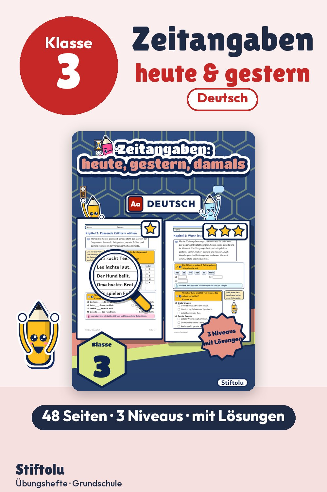
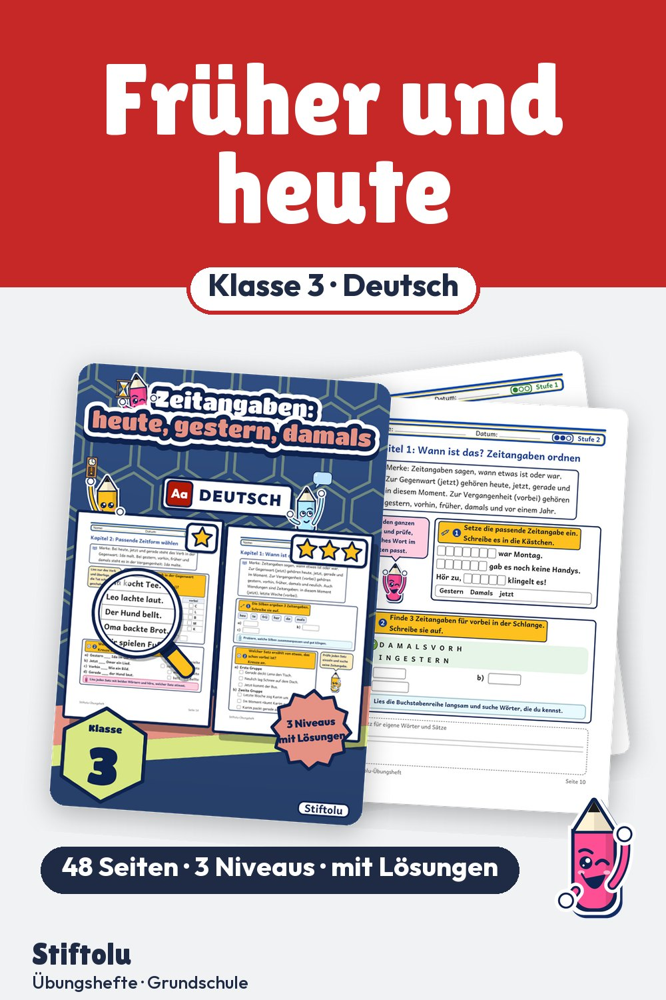

Werbung · Übungsheft von Stiftolu
Heute, gestern, damals – Gegenwart und Vergangenheit unterscheiden, Klasse 3


Zeitangaben sortieren, Sätze verbessern, Texte lesen: So gliedert sich die Arbeit an Gegenwart und Vergangenheit in drei Kapitel. Wer Lernstände unterscheiden will, nutzt drei Niveaus – mit Hilfe, selbstständig und zum Knobeln. Lösungen zur Selbstkontrolle und eine Handreichung liegen bei, 48 Seiten insgesamt, erhältlich auf eduki.